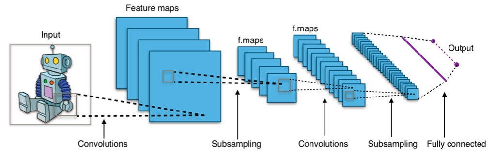
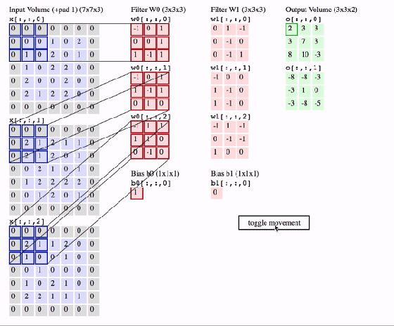
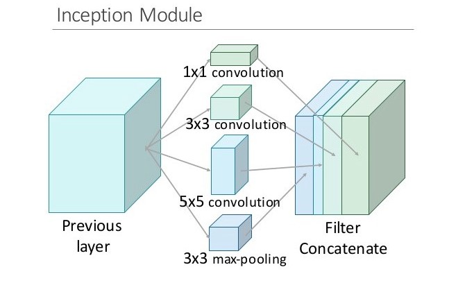
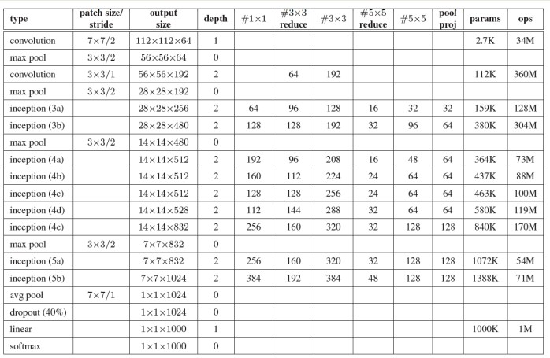
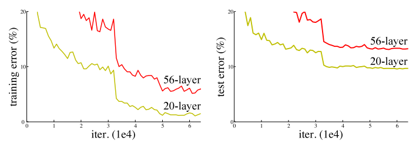

Mạng nơ-ron tích chập là một trong những
mô hình học sâu phổ biến nhất hiện nay, có khả năng nhận dạng và phân loại hình ảnh với
độ chính xác cao.
Kiến trúc một mạng nơ – ron tích chập thông thường bao gồm các lớp cơ bản sau:
Lớp tích chập (Convolutional), Lớp kích hoạt phi tuyến ReLU (Rectified Linear Unit), Lớp
lấy mẫu (Pooling) và Lớp liên kết đầy đủ (Fully – connected). Các lớp này được thay đổi
về số lượng và cách sắp xếp để tạo ra các mô hình huấn luyện phù hợp cho từng bài toán
khác nhau.

Kiến trúc của mạng nơ-ron tích chập
Đây là lớp quan trọng nhất của mạng CNN. Lớp tích chập lấy dữ liệu đầu vào, thực
hiện các phép chuyển đổi để tạo dữ liệu đầu vào cho các lớp kế tiếp (đầu ra của lớp này là
đầu vào của lớp khác), phép biến đổi được sử dụng là phép tính tích chập. Mỗi lớp tích chập
chứa một hay nhiều bộ lọc – bộ phát hiện đặc trưng (filter – feature detetor) cho phép phát
hiện và trích xuất các đặc trưng quan trọng của ảnh. Bước nhảy (stride) giúp xác định
khoảng dịch chuyển của bộ lọc khi tiến hành quét bộ lọc lên đầu vào.

Tích chập với 2 bộ lọc, 3 cột, 2 bước nhảy, lề bằng 1
Lớp này được xây dựng với ý nghĩa đảm bảo tính phi tuyến của mô hình huấn
luyện
sau khi đã thực hiện một loạt các tính toán tuyến tính trong lớp tích chập
Trong số các hàm kích hoạt này hàm ReLU được lựa
chọn do cài đặt đơn giản, tốc độ xử lý nhanh mà vẫn đảm bảo được tính toán hiệu quả. Cụ
thể, phép tính toán của hàm ReLU là chuyển các giá trị âm thành giá trị 0.
- Lớp lấy mẫu: Lớp lấy mẫu để giảm kích thước sẽ làm giảm số lượng tham số tính toán giúp rút ngắn thời gian huấn luyện và
tránh hiện tượng overfitting. Phương pháp lấy mẫu được sử dụng phổ biến nhất là max pooling. Phương pháp này
chỉ lấy giá trị lớn nhất tại vùng ảnh mà cửa sổ trượt đi qua. Khác với quá trình tính tích
chập quá trình này không có tham số. Tương tự như lớp tính tích chập ta phải chọn kích
thước cửa sổ (pooling size) và bước nhảy (stride).

Phương pháp lấy mẫu hàm max pool
- Lớp liên kết đầy đủ: . Lớp liên kết đầy đủ được thiết kế
hoàn toàn tương tự như trong mạng nơ – ron truyền thống, nghĩa là mọi nơ – ron ở các lớp
trước được kết nối với mọi nơ – ron trong lớp liên kết đầy đủ. Giống như các lớp tích chập,
ReLU, lấy mẫu, … có thể có một hoặc nhiều lớp được liên kết đầy đủ tùy thuộc vào mức
độ trừu tượng của các đặc trưng.
Các kiểu mạng huấn luyện:
Kiến trúc mạng VGG đã được K. Simonyan và A. Zisserman đến từ đại học
Oxford giới thiệu trong bài báo của họ “Very Deep Convolutional Networks for LargeScale Image Recognition”, năm 2014. Mạng đạt được độ chính xác 92,7 % đối với bộ dữ
liệu ImageNet. Đây là bộ dữ liệu với hơn 14 triệu ảnh và có hơn 1000 lớp
Mạng này được đặc trưng bởi sự đơn giản của nó, chỉ sử dụng các lớp chập với bộ
lọc 3x3 xếp chồng lên nhau theo chiều sâu tăng dần. Giảm kích thước khối được xử lý bằng
sử dụng max pooling. Hai lớp fully-connected, mỗi lớp có 4.096 nút được theo sau bởi một
bộ phân loại softmax (ở trên).
“16” và “19” có nghĩa là số lượng các lớp trọng số ở trong mạng. Cấu trúc của
VGG16 bao gồm 16 lớp: 13 lớp Conv (2 lớp conv-conv, 3 lớp conv-conv-conv) đều có
kernel 3x3, sau mỗi lớp conv là maxpooling để lấy mẫu xuống 0.5, và 3 lớp fully-connected.
VGG19 tương tự như VGG16 nhưng có thêm 3 lớp tích chập ở 3 lớp conv cuối (thành 4
conv xếp chồng với nhau)
Năm 2014, google publish một mạng neural do nhóm research của họ phát triển có tên là googleNet. Nó performance tốt hơn VGG, googleNet 6.7% error rate trong khi VGG là 7.3%.
Ý tưởng chính là họ tạo ra một module mới có tên là inception giúp mạng traning sâu và nhanh hơn, chỉ có 5m tham số so với alexnet là 60m nhanh hơn gấp 12 lần.
Inception module là một mạng CNN giúp training wider(thay vì thêm nhiều layer hơn vì rất dễ xảy ra overfitting + tăng parameter người ta nghĩ ra tăng deeper ở mỗi tầng layer) so với mạng CNN bình thường.
Mỗi layer trong CNN truyền thống sẽ extract các thông tin khác nhau. Output của 5x5 conv kernel sẽ khác với 3x3 kernel.
Vậy để lấy những thông tin cần thiết cho bài toán của chúng ta thì nên dùng kernel size như thế nào ? Tại sao chúng sử dụng tất cả ta và sau đó để model tự chọn.
Đó chính là ý tưởng của Inception module, nó tính toán các kernel size khác nhau từ một input sau đó concatenate nó lại thành output.

Cấu trúc mạng Inception
Trong inception người ta dùng conv kernel 1x1 với 2 mục đích là giảm tham số tính toán và dimensionality reduction . Dimensionality reduction có thể hiểu làm giảm depth của input (vd iput 28x28x100 qua kernel 1x1 với filter = 10 sẽ giảm depth về còn 28x28x10).
Giảm chi phí tính toán có thể hiểu qua ví dụ sau:
- Input shape 28x28x192 qua kernel 5x5 với 32 thì ouput là 28x28x32(padding same) thì tham số tính toán là (5x5x192)*(28x28x32)=120 million
- Input shape 28x28x192 qua kernel 1x1x192 filter = 16 , output = 28x28x16 tiếp tục với kernel 5x5x32 filter = 16 đươch output = 28x28x32. Tổng tham số tính toán : (28x28x16)192 + (28x28x32)(5x5x16) = 2.4 + 10 = 12.4 million.
Ta thấy với cùng output là 28x28x32 thì nếu dùng kernel 5x5x192 với 32 filter thì sẽ có tham số gấp 10 lần so với sử dụng kernel 1x1x192 sau đó dùng tiếp 1 kernel 5x5x16 với filter 32

Cấu trúc mạng GoogleNet
GoogleNet gồm 22 lớp, khởi đầu vẫn là những lớp tích chập đơn giản, tiếp theo là những
khối của mô – đun inception với max pooling theo sau mỗi khối. Một số đặc điểm chính:
- Sử dụng 9 mô – đun Inception trên toàn bộ kiến trúc. Làm mô hình sâu hơn rất nhiều.
- Không sử dụng lớp fully connected mà thay vào đó là average pooling từ kích thước
7x7x1024 thành 1x1x1024 giảm thiểu được rất nhiều số lượng tham số.
- Ít hơn 12 lần số lượng tham số so với Alexnet.
- Các Loss phụ (Auxiliary Loss) được thêm vào total loss (weight =0.3). Nhưng được
loại bỏ khi test.
ResNet được phát triển bởi microsoft năm 2015 với bài báo “Deep residual
learning for image recognition”. ResNet đã chiến thắng cuộc thi ImageNet ILSVRC
competition 2015 với error rate 3.57%, ResNet có cấu trúc gần giống VGG với nhiều lớp
xếp chồng lên nhau làm cho mô hình sâu hơn. Không giống VGG, ResNet có chiều sâu sâu
hơn như 34, 55, 101 và 151. Resnet giải quyết được vấn đề của deep learning truyền thống,
nó có thể dễ dàng huấn luyện mô hình với hàng trăm lớp. Để hiểu ResNet chúng ta cần hiểu
vấn đề khi xếp chồng nhiều lớp khi huấn luyện, vấn đề đầu tiên khi tăng mô hình sâu hơn
gradient sẽ bị vanishing/explodes. Vấn đề này có thể giải quyết bằng cách thêm Batch
Normalization nó giúp chuẩn hóa đầu ra giúp các hệ số trở nên cân bằng hơn không quá
nhỏ hoặc quá lớn nên sẽ giúp mô hình dễ hội tụ hơn. Vấn đề thứ 2 là suy giảm (degradation),
Khi độ chính xác của mô hình bắt đầu bão hòa (saturated) thậm chí là giảm. Như hình 2.17
bên dưới khi xếp chồng nhiều lớp hơn thì training error lại cao hơn ít lớp, như vậy vấn đề
không phải là do overfitting. Vấn đề này là do mô hình không dễ huấn luyện khó học hơn,
thử tượng tượng đang huấn luyện một mô hình đơn giản, sau đó chúng ta thêm nhiều lớp,
các lớp sau khi thêm vào sẽ không học thêm được gì cả (identity mapping) nên độ chính
xác sẽ tương tự như mô hình ban đầu mà không tăng. Resnet được ra đời để giải quyết vấn
đề degradation này

Tăng độ sâu mạng dẫn đến hiệu suất kém hơn
ResNet có kiến trúc gồm nhiều residual block, cứ sau hai lớp ta cộng đầu vào với
đầu ra, ta thu được F(x) sau đó thêm x vào H(x) = F(x) + x. Model sẽ dễ học hơn khi chúng
ta thêm đặc trưng từ lớp trước vào.

Một khối ResNet
Việc xếp chồng các lớp không làm giảm hiệu suất mạng, bởi vì chúng ta có thể đơn giản xếp chồng ánh xạ nhận dạng
lên mạng hiện tại và kiến trúc kết quả sẽ thực hiện tương tự. Điều này chỉ ra rằng mô hình sâu hơn không được tạo ra
lỗi đào tạo cao hơn so với các đối tác nông hơn. Họ đưa ra giả thuyết rằng việc để các lớp xếp chồng lên nhau phù hợp
với ánh xạ dư sẽ dễ hơn là để chúng phù hợp trực tiếp với ánh xạ lót mong muốn.
Và khối dư ở trên rõ ràng cho phép nó làm chính xác điều đó